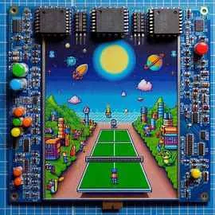
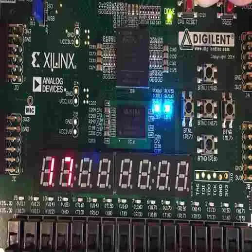

VLSI Projects
Traffic Light Controller
VGA Display

SPI Accelerometer

VGA Digital Clock

Digital Clock

Key Board Interfacing
Greatest Common Divisor
ELEVATOR

VGA Object Animation

VGA Pong Game

Stop Watch

FIFO Memory

I2C Protocol
Voting Machine
Vending Machine

Car Parking System

FSM Controlled Calculator

UART Reciever

Candy Machine